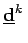
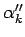

Gradientenverfahren für Probleme mit Ungleichungsrestriktionen
Wenn das Problem
 |
(18.89a) |
mit einem Iterationsverfahren der Art
gelöst werden soll, dann sind auf Grund des eingeschränkten zulässigen Bereiches zwei Voraussetzungen zu beachten:
-
Die Richtung

muß eine in

zulässige Abstiegsrichtung sein.
-
Die Schrittweite

ist so zu bestimmen, daß auch

in
M liegt.
Die verschiedenen Verfahren gemäß Vorschrift (18.89b) unterscheiden sich in der Konstruktion der Richtung . Um die Zulässigkeit der Folge zu sichern, werden bzw.  folgendermaßen bestimmt:
Daraus resultiert
Wenn in einem Schritt k keine zulässige Abstiegsrichtung existiert, dann ist ein stationärer Punkt.